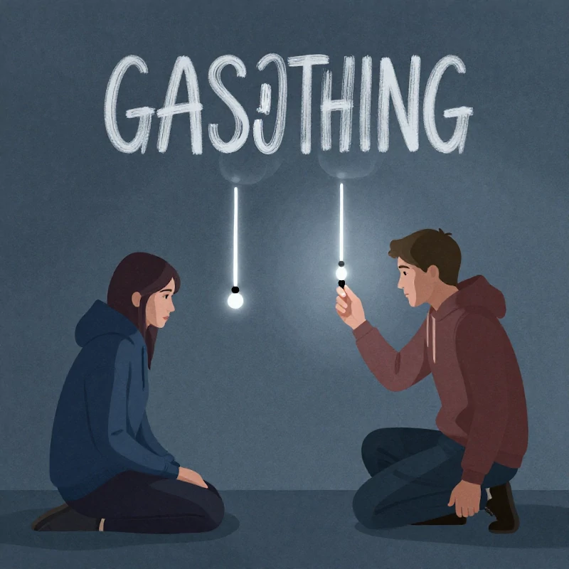

Sandefjord
Om oss
Privatetterforsker i Oslo og Norge - privat etterforsker - Etterforsker1 holder til i Sandefjord.
Privatetterforsker i Oslo og Norge - privat etterforsker - Etterforsker1 holder til i Sandefjord og tar oppdrag innen granskning for næringslivet, etterforskning, nyeste artikler og gaslighting norsk.
Finner du ikke det du ser etter, så ta gjerne kontakt, for vi gjør det meste.
Avslør Utroskap med hjelp av privatetterforsker - Etterforsker 1.
Forsiden Tjenester Om oss Blog Søk in English Kontakt ETTERFORSKER1 Vi er privatetterforskere.
Se våre tjenester her Kontakt oss for et tilbud Erfarne privatetterforskere For deg som privatperson og næringslivet.
«Henvendelsen som ikke blir liggende»

4Tjenesteområder
SandefjordHolder til
Direkte21 60 81 78
Vil du vite mer?
Vi svarer på det du lurer på, uten bindende avtale.
Ta kontakt